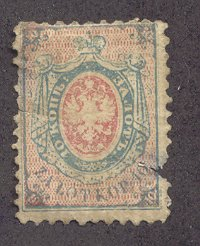
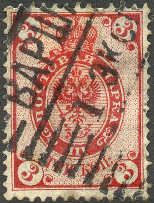
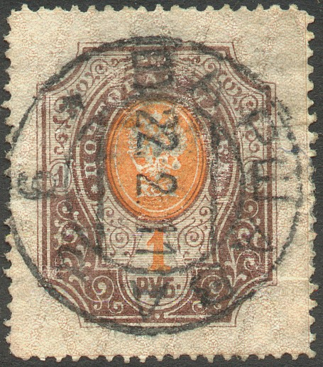
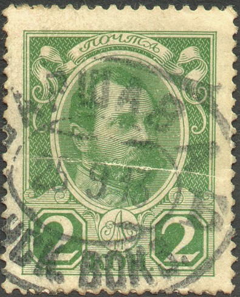
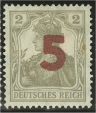

(reduced size)
Return To Catalogue - Poland 1860 issue - 1918-19, stamps of Germany and Austria overprinted - Regular issues 1919-1920 - Regular issues 1920-1940 - Local issues - Local issues for Warsaw - Local overprints - Miscellaneous and local issues - Upper Silesia - Port Gdansk - Fiscal stamps
Note: on my website many of the
pictures can not be seen! They are of course present in the
catalogue;
contact me if you want to purchase the catalogue.

Only one stamp was issued in Poland in 1860. Click here for more information. It was replaced with a russian stamp in 1863. From 1860 to 1916 the stamps of Russia, Germany and Austria were used in Poland (since Poland was divided between these countries). Examples of this period:
  
(reduced size)
Many names of towns were changed after the Polish independance. Some examples of the major city-names (German first, Polish second): Allenstein - Olsztyn, Beuthen - Bytom, Bielitz - Bielice, Breslau - Wroclaw, Brieg - Brzeg, Bromberg - Bydgoszcz, Danzig - Gdansk, Gleiwitz - Gliwice, Gnesen - Gniezno, Gorlitz - Zgorzelec, Kattowitz - Katowice, Krakau - Krakowiec, Landeck - Ledyczek, Liegnitz - Legnica, Loebau - Lubawa, Marienwerder - Kwidzyn, Memel - Klaipeda, Oppeln - Opole, Posen - Poznan and Waschau - Warszawa. a very useful site with many more of these names is: http://www.atsnotes.com/other/gerpol.html.


'5 FEN. 5' on 2 g brown and yellow '10 FEN. 10' on 6 g green and yellow '25 FEN. 25' on 10 g red and yellow '50 FEN. 50' on 20 g blue and yellow
These stamps are perforated 11 1/2. Most values seem to exist with inverted overprint (value: ***)
Value of the stamps |
|||
vc = very common c = common * = not so common ** = uncommon |
*** = very uncommon R = rare RR = very rare RRR = extremely rare |
||
| Value | Unused | Used | Remarks |
| 5 f on 2 g | c | c | |
| 10 f on 6 g | c | * | |
| 25 f on 10 g | * | * | |
| 50 f on 20 g | * | * | |

(Typical cancellation)
Examples:


(Reduced size)
(Reduced sizes)
Examples of this period:
Stamps in the following design were issued for Upper Silesia, click here for more details:
The site http://www.stampspoland.nl/ is very useful. Among many other things, fiscal stamps and bogus stamps are listed. Highly recommended!


{kind=link}
{kind=link}
{kind=link}
{kind=link}
{kind=link}
{kind=link}
{kind=link}